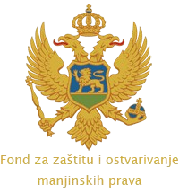

Preskoči na sadržaj

DIGITALNI ARHIV KULTURNE BAŠTINE
U duhu svetinje
Meni
☰
Naslovna
O projektu
Istorija i graditeljstvo
Crkva i zajednica
Arhitektonsko nasljeđe
Fotodokumentacija
Pretraga
← Naslovna / Zbirka
INDEKS / PRETRAGA
Pretraga arhiva
Pretražite izvorni tekst svih 23 odjeljka
POJAM ZA PRETRAGU
Obriši
Unesite pojam za pretragu.
✕